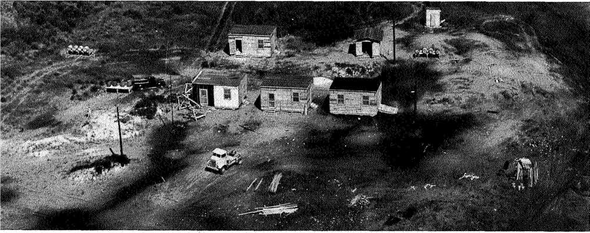

自1945年6月27日发射第一枚火箭以来，沃洛普斯（Wallops）已经从一个用于导弹研究的小型试验场，发展成了美国航空航天局（NASA）在亚轨道和小轨道发射活动的首选地点，支持着全球的航空航天、科学探索和技术开发。
“在它75年的历史中，沃洛普斯的员工展现出了事在人为的精神，不仅在执行NASA任务方面如此，在进行外展活动和为当地社会提供灵感方面也是如此。”沃洛普斯的负责人大卫·皮尔斯（David L. Pierce）说道。
皮尔斯表示：“大部分的灵感与启发都来自沃洛普斯的长期领导人罗伯特·克里格（Robert L. Krieger），他从1948年到1981年指导沃洛普斯取得了巨大的发展。在克里格的奉献精神、才智和毅力以及沃洛普斯校友和现有员工的共同努力下，沃洛普斯将成为空间领域的世界领导者，从而推动科学发现、推进未来技术的发展，并培养出一代又一代太空探险家。一直以来，我们因成为东海岸社区的一员而感到无比自豪。”
NASA在沃洛普斯拥有近1 100名员工，利用探空火箭（soundingrocket）、科学气球、探测器和飞机，他们一直在支持科学家加深对地球和我们周围宇宙的了解。沃洛普斯还拥有用于追踪大量卫星的设施、一个研究型机场，以及NASA唯一拥有的用于亚轨道和轨道火箭发射的场地。
此外，沃洛普斯还会接待政府和商业组织，包括美国海军、美国国家海洋和大气管理局（National Oceanic and AtmosphericAdministration，NOAA）、美国海岸警卫队、中大西洋地区太空港（Mid-Atlantic Regional Spaceport）、诺斯罗普·格鲁曼公司（NorthropGrumman）以及火箭实验室（Rocket Lab）。有大约700名工作人员负责支持这些组织的相关活动。
1945年4月，NASA的前身，也就是美国国家航空咨询委员会（National Advisory Committee for Aeronautics，NACA）决定在弗吉尼亚州东海岸的小屏障岛上建立一个发射场。
在早期的时候，这座小岛的曾用名包括科戈坦克（Keeckotank）、阿科科莫森（Accocomoson）和欧科科莫森（Occocomoson）。1672年，英国国王查理二世（CharlesII）将这座小岛的所有权授予约翰·沃洛普（John Wallop），此后的数年间，小岛的所有权经历了重重转变，到1889年的时候，所有权转到了沃洛普斯岛屿协会手中，他们在小岛的北端建立了一家会所。
为了建设测试发射场，NACA向协会租下了沃洛普斯岛南端的土地，并最终于1949年以93 238.71美元的价格买下了整个小岛。
乔·肖托尔（Joe Shortal）在他的著作《新维度——沃洛普斯岛飞行试验场：最初的15年》（A New Dimension — Wallops IslandFlight Test Range: The First Fifteen Years）中写道：“沃洛普斯是由国家航空咨询委员会（NACA）在第二次世界大战期间（1945年春）建立的，作为弗吉尼亚州兰利菲尔德市NACA实验室的辅助基地，为导弹的飞行研究提供测试场地，最初研究的飞行速度为亚音速，但后续计划将范围扩展到跨音速（transonic）和超音速（supersonic）。”
这座小岛满足建立试验场的三个基本要求：1）靠近兰利；2）提供了50英里（约80千米）不受人员或运输阻碍的发射场；3）靠近当时已有的辅助军事基地，也就是钦科蒂格海军辅助航空基地（Chincoteague Naval Auxiliary Air Station）。
在短短两个多月的时间里，沃洛普斯岛的试验场就已经准备就绪，准备好在6月27日进行它的首次，确切地说是首8次发射。7月4日在沃洛普斯岛进行首次非制导导弹测试之前，这些小型火箭被用于测试雷达系统。
首批发射的时候，测试场中的相关设施相当简陋：发射区仅包含一块作为发射平台的50 x 50英尺（约15 x 15 米）混凝土板、一个覆盖着沙袋的8 x 10英尺（2.4 x 3米）观测站、一个火箭发动机储藏冰屋，以及最后的装配大楼。
现在，这片发射区是沃洛普斯岛上的发射区2，包含3个亚轨道探空火箭发射器和一座发射管制台。
一开始的时候，岛上的工作区域由5个木制棚屋组成：一个运营办公室，一个组装棚，一个通用仓库棚，一个无线电、药房和暗室棚，以及带有15kw发电机的发电机房。此外，起居区由带木地板的帐篷组成。
这些不起眼的原初设施，一步步扩展到了包括政府和商业投入在内的先进设施，总价值超过10亿美元。
在1958年，NACA变成了NASA，沃洛普斯则在1959年从岛上扩展到岛外，将沃洛普斯岛以北约7英里（11千米）处的海军航空基地囊括其中，现在通常称其为沃洛普斯主基地（Wallops Main Base.）。
多年来，随着硬件设施上的不断更新，沃洛普斯的名字也在一次次变更。一开始它由兰利领导，被称作辅助飞行研究基地（Auxiliary Flight Research Station），而后改为无人驾驶飞机研究基地（PilotlessAircraft Research Station）。随着NASA的成立，沃洛普斯成为了一个独立的中心，先被称为沃洛普斯基地（Wallops Station），然后又被称为沃洛普斯飞行中心（WallopsFlight Center）。最终在1981年，它成为了NASA戈达德航天飞行中心（GoddardSpace Flight Center）的一部分，并被更名为沃洛普斯飞行研究所（Wallops Flight Facility）。
在《沃洛普斯基地与美国太空计划的创立》（Wallops Station and the Creation of the American Space Program）一书中，小哈罗德·华莱士（HaroldWallace Jr.）写到：“沃洛普斯尽管体量较小且鲜为人知，却为美国早期的航天事业做出了重要贡献。”
皮尔斯表示：“对于沃洛普斯的前75年，华莱士的话可以说是非常恰当的。沃洛普斯的员工为我们的成就感到自豪，我们接受了过去的挑战，并准备好了给未来的挑战提供支持，继续探索地球和更广阔的宇宙，包括NASA计划在2024年之前重返月球的阿尔忒弥斯（Artemis）计划。我们非常期待下一个75年将会带来的突破！”
参考来源：
[1]https://www.nasa.gov/wallops/2020/feature/wallops-75-years-of-exploration-and-technology-development
[2]https://ntrs.nasa.gov/archive/nasa/casi.ntrs.nasa.gov/19790011995.pdf